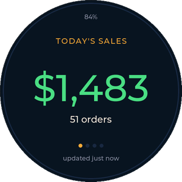
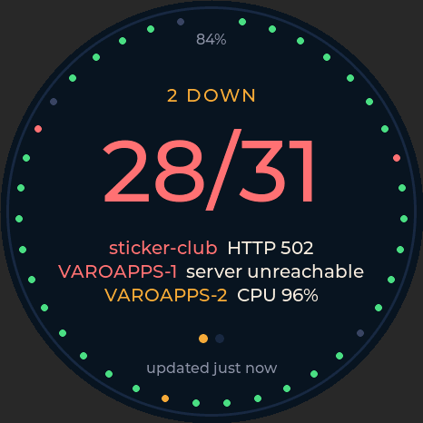

Desk Dials
Free firmware for the Waveshare ESP32-S3-Touch-AMOLED-1.75 — the round 1.75″ touch AMOLED. Pick a dial, plug the board into your computer, and install it from this page in Chrome or Edge. No toolchain, and you set up WiFi from your phone.


Sales Dial
Your takings, live on your desk.
- FairKeep: today's sales across your shows and web orders — total, POS, web, or all three.
- Etsy: today, this month and this year — orders and gross, or after Etsy fees — plus how many orders are waiting to ship (amber when one is due today, red when overdue).
- Tap to change view, or lock each dial to one.
Flight Tracker
Live aircraft around you on a radar scope: callsign, altitude, speed, heading and route, with swipeable radar, list and stats views.
Install Capsule Radar ↗By Quique Tortosa — github.com/socquique/capsule-radar (MIT). Our dials build on its display and touch drivers.


Server Status
Every app, service, database, domain and server you run, one dot each round the edge.
- Green when everything answers; the number turns amber or red and the dial names what broke.
- Second view: each Hetzner server and its CPU.
- Reads a small status service you host (the
status-servicefolder) with read-only API tokens.
More dials coming
Ideas or requests? Open an issue on GitHub.
The hardware
Every dial here runs on the Waveshare ESP32-S3-Touch-AMOLED-1.75: 466×466 round AMOLED, capacitive touch, 8 MB PSRAM, USB-C, with an optional battery. You need a USB-C cable that carries data (not a charge-only cable).
- Board not showing up in the installer? Unplug it, hold BOOT, plug it back in, then let go. If a battery is fitted, hold PWR to switch it off first.
- After installing, unplug and replug it (or tap PWR) so it starts the new firmware.
- You can switch a board between dials any time — just install a different one.